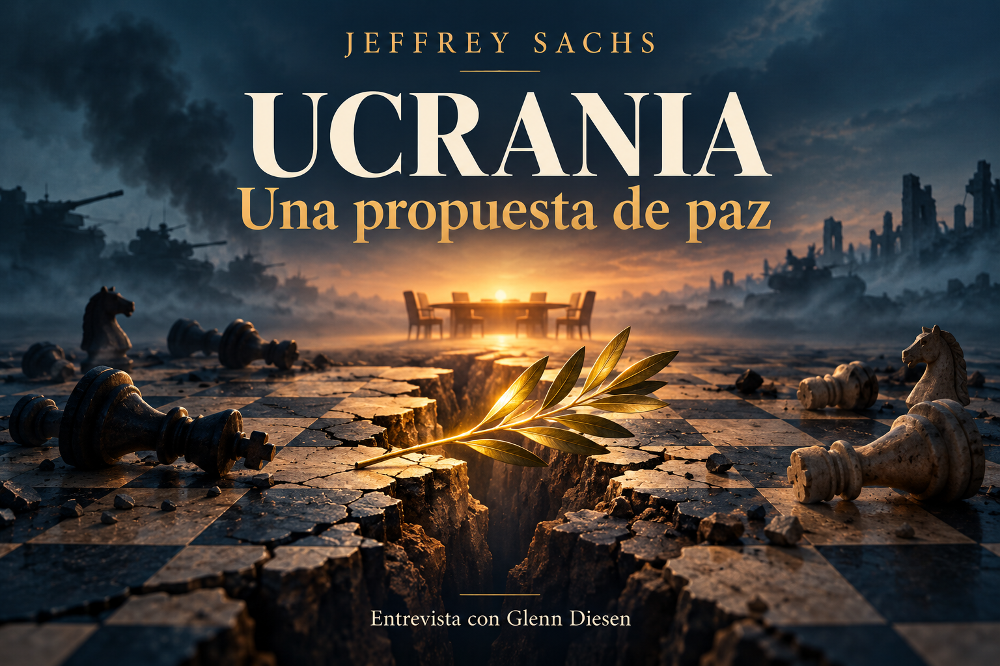

Las opiniones de Jeffrey Sachs sobre neutralidad, seguridad europea y escalada militar.

Ilustración simbólica generada con IA. No representa un hecho ni una frontera real.
Comprender la conversación
De la disputa de seguridad al armisticio
Jeffrey Sachs propone terminar la guerra mediante un acuerdo que vincule el cese de hostilidades con la neutralidad ucraniana, el fin de la ampliación de la OTAN y una línea de armisticio. Este cuaderno explica cómo llega a esa propuesta, qué documentos invoca y qué cuestiones deja abiertas. La entrevista pertenece al canal Glenn Diesen Español; Diesen interviene como entrevistador, no como autor de todas las afirmaciones aquí recogidas.
La exposición atribuye las ideas al entrevistado. Los documentos enlazados permiten examinar su alcance; los diagramas son elaboraciones editoriales.
Lectura temática · 00:26–04:37
La tesis de Sachs
Sachs distingue entre suspender los combates y resolver la disputa política que, en su interpretación, los origina. Considera insuficiente un alto el fuego aislado: si permanecen las mismas amenazas percibidas y los mismos objetivos militares, la pausa puede dejar intactas las condiciones para otra guerra. Su propuesta busca combinar el fin de las hostilidades con compromisos sobre la arquitectura de seguridad europea.
El entrevistado atribuye un papel central a la ampliación de la OTAN y a la primacía estadounidense. Sostiene que Rusia interpreta la presencia militar occidental cerca de sus fronteras como una amenaza. Rechaza la explicación que reduce la guerra a una voluntad rusa de reconstruir un imperio. Esta es su interpretación causal; la entrevista no demuestra por sí sola que esa sea la única explicación ni que una decisión distinta hubiera evitado necesariamente la invasión.
Su argumento incorpora a Ucrania, Rusia y los países europeos dentro de una seguridad compartida. Para él, un resultado estable debe atender a las preocupaciones de todos. Explicar ese razonamiento no equivale a aceptar como verificadas las declaraciones atribuidas a gobiernos ni a establecer la legalidad de una actuación militar.
«hay fundamentos políticos detrás de lo que está ocurriendo en Ucrania.»
Esquema editorial de la propuesta de Sachs. No representa una secuencia acordada ni un resultado garantizado.
Lectura temática · 02:16–17:47
Seguridad inclusiva
Sachs utiliza seguridad inclusiva o indivisible para expresar que un Estado no debería aumentar su seguridad generando inseguridad en otro. Desde ese principio cuestiona que la política de puertas abiertas de la OTAN sea suficiente para resolver el conflicto. Considera necesario negociar límites explícitos y tratar las amenazas percibidas antes de exigir el silencio de las armas.
La Carta de la OSCE de 1999 permite leer el argumento con precisión: su apartado 8 reúne la libertad de elegir alianzas, el derecho a la neutralidad y el compromiso de no reforzar la seguridad a costa de otros Estados. También rechaza las esferas de influencia. El documento proporciona principios compartidos; no determina por sí solo cómo resolver las tensiones entre ellos en Ucrania. Fuente: Carta para la Seguridad Europea, apartado 8.
Sachs reprocha a los dirigentes europeos que no escuchen a Rusia o que rehúyan discutir la cuestión de las alianzas. Presenta esa crítica como resultado de conversaciones propias. Una cuestión que queda sin desarrollar es cómo convertir la seguridad inclusiva en obligaciones verificables, con garantías para Ucrania y procedimientos ante un incumplimiento.
Sachs relata que en diciembre de 2021 pidió a la Casa Blanca una declaración pública de que la OTAN no se ampliaría a Ucrania. Según su testimonio, recibió en privado la respuesta de que esa ampliación no ocurriría, pero también la negativa a anunciarla por la política de puertas abiertas. No se aporta en la entrevista una grabación ni un acta de esa conversación.
El contraste entre mensaje privado y política pública organiza su crítica diplomática. Para Sachs, una garantía que no puede comprobarse ni exigirse deja espacio para negar posteriormente su alcance. Diesen interviene señalando que una promesa implícita podría generar otra disputa sobre qué se había acordado realmente.
De este episodio Sachs extrae una exigencia práctica: formular de manera clara la política sobre Ucrania y la OTAN. Esta exigencia no acredita su afirmación contrafactual de que la declaración habría evitado la guerra; muestra qué compromiso considera imprescindible para negociar. La edición conserva la diferencia entre testimonio personal, interpretación y propuesta.
Diesen introduce las tácticas del salami como una estrategia de cambios graduales. Su argumento es que pasos pequeños pueden reducir la resistencia de la opinión pública y del adversario frente a una transformación que, planteada de golpe, encontraría más oposición. El término describe una interpretación del proceso; no es una clasificación oficial de todas las políticas mencionadas.
Sachs acepta ese enfoque y distingue entre la adhesión formal y la integración militar de hecho. Menciona armamento, interoperabilidad y cooperación con la OTAN. Sostiene que una presencia creciente puede alterar el equilibrio de seguridad aun sin que Ucrania sea miembro de la alianza. La cifra de un ejército de un millón de soldados aparece en su exposición sin una fuente estadística identificable; no se utiliza aquí como dato validado.
Diesen relaciona el gradualismo con la forma de presentar las respuestas rusas como desproporcionadas o no provocadas. Sachs amplía esa crítica al lenguaje de los medios. Son dos intervenciones relacionadas, pero la transcripción no etiqueta sistemáticamente cada voz: los cambios se delimitan por el contexto de las preguntas y respuestas, con atribución prudente.
El esquema editorial muestra la secuencia que describen: cooperación incremental, mayor integración militar, percepción de amenaza y respuesta. Sus flechas explican el argumento; no prueban una causalidad universal ni convierten la reacción militar en una consecuencia inevitable.
«Estás construyendo el ejército, lo estás haciendo interoperable»
Esquema editorial de las intervenciones de Diesen y Sachs. Las flechas describen su razonamiento.
Lectura temática · 12:18–25:55
Historia y documentos
Sachs conecta la negociación de 1990 sobre Alemania con las ampliaciones posteriores de la OTAN. Invoca las palabras de Genscher, Baker y Kohl. Los documentos desclasificados conservados por el National Security Archive recogen garantías y conversaciones sobre seguridad soviética. Conviene distinguir esas conversaciones del alcance jurídico del tratado sobre Alemania. La transcripción sitúa la fórmula de Baker el 7 de febrero; el registro de su conversación con Gorbachov la sitúa el 9 de febrero de 1990.
La declaración de Bucarest de 2008 constituye una referencia directa y localizada: su apartado 23 anunció que Ucrania y Georgia llegarían a ser miembros. No estableció en ese párrafo una fecha de ingreso. Sachs la interpreta como una decisión especialmente peligrosa. La mención a las memorias de Angela Merkel se conserva como referencia del entrevistado, sin reproducir una supuesta cita literal que no se ha localizado en esta edición.
Para explicar la primacía estadounidense, Sachs remite a Zbigniew Brzezinski, al libro The Grand Chessboard y al artículo A Geostrategy for Eurasia de 1997. El índice de Foreign Affairs permite identificar el artículo; no se ha cotejado aquí su texto íntegro ni la ventana 2005–2010 citada en la conversación. Los planes estratégicos que Sachs relaciona no equivalen, por su mera existencia, a una orden única de ejecutar todos los acontecimientos posteriores.
Sachs cita también el informe de Robert Blackwill y Ashley Tellis sobre China y Extending Russia de RAND. El primero está localizado en CFR con fecha de abril de 2015, mientras que la entrevista habla de marzo. El segundo estudia opciones de presión con beneficios, costes y riesgos, incluida la posibilidad de escalada. Sachs los lee como elementos de una estrategia amplia; el alcance documentado es la existencia y contenido de esos análisis, no la prueba de toda la intención que les atribuye.
El entrevistado caracteriza Maidán como un golpe dirigido desde Estados Unidos y plantea una posible intención de controlar Sebastopol. También atribuye motivaciones a empresas tecnológicas y critica al New York Times. Estas acusaciones e hipótesis se conservan como opiniones o alegaciones suyas. No se presentan como hechos establecidos por los informes enlazados.
Sachs propone unir el fin de las hostilidades con el retorno de Ucrania a la neutralidad y con una declaración explícita que cierre la ampliación de la OTAN hacia el este. Incluye a Ucrania y Georgia en ese cierre. Su planteamiento trata de separar a las grandes potencias mediante Estados neutrales, a los que atribuye una función de amortiguación estratégica.
El componente territorial es un armisticio. Sachs deja a los diplomáticos la discusión sobre si la línea abarcaría todo el Donbás o seguiría la línea de contacto. No afirma disponer de una frontera final acordada. La propuesta permite que las reivindicaciones jurídicas continúen abiertas mientras las partes aceptan una administración de hecho y renuncian a utilizar la fuerza para modificarla.
En su razonamiento, las disputas territoriales posteriores deberían tratarse por medios diplomáticos. Esa distinción entre detener la guerra y cerrar el estatus de los territorios es central para entender la propuesta. No se añade un mapa ni se dibuja una línea imaginaria, porque el entrevistado no fija sus coordenadas.
Sachs considera que estas decisiones podrían reducir el sufrimiento y el riesgo de una guerra europea mayor. Son expectativas condicionales: dependen de la aceptación y del cumplimiento de los actores. La entrevista no ofrece un mecanismo completo de verificación, sanciones, garantías de defensa o calendario de aplicación.
Sachs busca que el alto el fuego se acompañe de compromisos políticos sobre seguridad.
Neutralidad de Ucrania
La considera una herramienta para separar a las grandes potencias. No desarrolla un régimen completo de garantías.
Fin de la ampliación
Pide una declaración pública explícita que incluya Ucrania y Georgia.
Línea de armisticio
Deja a negociación su ubicación. No la equipara a una frontera jurídica definitiva.
Renuncia a la fuerza
Propone gestionar las reclamaciones territoriales posteriores mediante diplomacia.
Lectura temática · 30:50–35:14
Lo que queda abierto
Sachs presenta la neutralidad como una herramienta probada e invoca Suecia, Finlandia, Austria y Suiza como referencias históricas. Esa comparación no demuestra que sus condiciones sean trasladables sin cambios a Ucrania. Una evaluación de su propuesta requeriría precisar quién garantiza la neutralidad, qué capacidad defensiva conservaría el país y cómo se respondería a otra agresión.
El cierre de Diesen vincula el resultado electoral de 2019 con Minsk y con la búsqueda de paz. Su referencia al 73 % debe leerse como una interpretación del apoyo a un candidato, no como el resultado de un referéndum sobre neutralidad. La afirmación sobre un acuerdo de Estambul torpedeado por Estados Unidos no se verifica en este cuaderno y no se presenta como acuerdo de paz firmado.
También quedan abiertas la participación y el consentimiento de Ucrania, la supervisión del armisticio, las garantías de seguridad, los desplazados, los prisioneros, la reconstrucción y la situación de los territorios. Esta lista es una ampliación editorial destinada a evaluar el alcance de la propuesta; no se atribuye a Sachs como si hubiera desarrollado todas esas condiciones.
La conclusión del entrevistado es una defensa de la diplomacia incluso cuando las posibilidades parecen limitadas. El cuaderno permite comprender esa salida sin confundir una propuesta con un pacto disponible o una predicción con un resultado asegurado.
«deberíamos aprovechar incluso los pequeños destellos de esperanza.»
Fuente principal: transcripción en español aportada por el usuario, desde 00:02 hasta 35:14. El texto se ha leído íntegramente; no se ha cotejado con el audio. Las citas se reproducen como aparecen en la transcripción y las marcas enlazan su localización textual. No se ha confirmado la fecha de publicación de la entrevista. Las referencias a ahora, al invierno o a la semana pasada corresponden a la conversación, no a la fecha de esta edición. Al comienzo, Diesen dice que el marco aún no estaba publicado: no se presenta como tratado firmado ni como propuesta diplomática oficialmente adoptada.
Consulta documental selectiva: 8 de octubre de 2026. Cada enlace indica qué se ha podido localizar y qué permanece sin cotejar.
Carta para la Seguridad Europea de la OSCE
1999, apartado 8 y apartado 11. Complemento documental: reúne elección de alianzas, neutralidad, seguridad compartida y resolución pacífica. No decide por sí solo la aplicación de esos principios al caso.
Colección de documentos desclasificados. Conversación Baker–Gorbachov del 9 de febrero; diferencia entre garantías diplomáticas y tratado final. Consulta selectiva de registros y presentación archivística.
Robert Blackwill y Ashley Tellis, CFR, abril de 2015. Se consultó la presentación y sus recomendaciones, no se cotejó íntegramente el informe. Una propuesta de autores no equivale a política gubernamental adoptada.
Extending Russia Competing from Advantageous Ground
James Dobbins y otros, RAND, 24 de abril de 2019. Presentación y conclusiones: opciones, costes y riesgos de escalada. No acredita por sí solo un plan de provocar la invasión.
A Geostrategy for Eurasia y artículos de Brzezinski
El índice identifica el artículo de septiembre y octubre de 1997. Texto íntegro no cotejado. El libro The Grand Chessboard, el borrador Wolfowitz de 1992, el escrito de George Beebe de diciembre de 2021 y las memorias de Merkel se mencionan en la entrevista sin cotejo completo en esta edición.
No se han localizado de forma suficiente las conversaciones privadas relatadas, la cifra del ejército de un millón, las acusaciones sobre Maidán y Sebastopol, la motivación de empresas tecnológicas, la cita de Keith Kellogg, el recuento de palabras del New York Times ni la atribución del fracaso de Estambul a Estados Unidos. Se conservan como afirmaciones de la conversación.
Voces y correcciones
Los nombres Jeffrey Sachs, Zbigniew Brzezinski, George Beebe, Hans Dietrich Genscher y Helmut Kohl se normalizan en el texto editorial. Las citas breves conservan la transcripción. Los segmentos 10:26, 17:47, aproximadamente 26:00 y 34:19 corresponden por contexto a intervenciones del entrevistador; no se han verificado escuchando el audio.
Glosario de lectura
Armisticio
Acuerdo para detener las hostilidades sin que todas las disputas jurídicas queden resueltas.
Interoperabilidad
Capacidad para operar conjuntamente; no equivale a pertenencia formal a una alianza.
Primacía
Predominio estratégico.
Seguridad indivisible
Relación entre la seguridad de un Estado y la de los demás.